1. Scopia (Arco Cirúrgico)

A Scopia (ou radioscopia) é realizada através de um equipamento móvel de Raios-X conhecido como "Arco em C". Ele permite a visualização dinâmica e em tempo real da anatomia interna do paciente durante o ato cirúrgico, sendo fundamental em cirurgias ortopédicas, urológicas, vasculares e implantes de marca-passo.
Função da Enfermagem:
- Garantir o uso de EPIs radiológicos (aventais de chumbo e protetores de tireoide) para toda a equipe presente na sala.
- Auxiliar no posicionamento seguro do equipamento sem quebrar a esterilidade do campo cirúrgico, muitas vezes utilizando campos estéreis (capas) no arco.
- Zelar pelo conforto e posicionamento do paciente, já que a mesa cirúrgica precisa ser radiotransparente e movida conforme a necessidade do raio.
2. Bomba de Infusão

A bomba de infusão é um dispositivo eletrônico programável projetado para infundir fluidos, nutrientes ou medicamentos de forma controlada, precisa e segura no sistema circulatório do paciente. No bloco operatório, é imprescindível para a administração de hidratação contínua, drogas vasoativas, antibióticos e bloqueadores neuromusculares.
Função da Enfermagem:
- Montar corretamente o equipo (específico para cada bomba) e realizar o preenchimento (prime) sem bolhas de ar.
- Programar volume, tempo e vazão (ml/h) conforme a prescrição médica ou protocolo anestésico.
- Monitorar constantemente os alarmes visuais e sonoros (oclusão, ar na linha, fim de infusão).
3. Bomba de Seringa
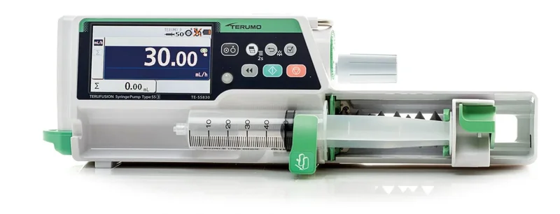
Similar à bomba de infusão padrão, porém projetada especificamente para empurrar o êmbolo de uma seringa. A Bomba de Seringa é utilizada para a administração de pequenos volumes com precisão milimétrica, sendo o padrão ouro para anestesia venosa total (TIVA), infusão de opióides fortes e sedativos potentes onde margens de erro não são toleradas.
Função da Enfermagem:
- Identificar corretamente a seringa acoplada com o nome do fármaco, concentração e preparo.
- Garantir o encaixe perfeito da seringa na bomba para evitar infusões em bolo acidentais (efeito sifão).
- Estar alerta para o momento da troca da seringa, evitando interrupções na sedação ou analgesia do paciente durante o ato cirúrgico.
4. Capnógrafo
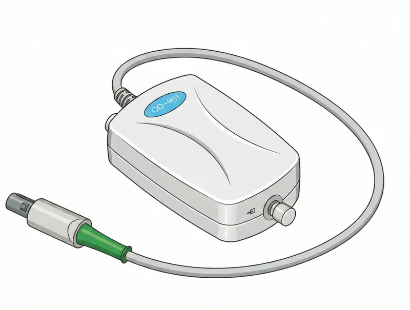
O Capnógrafo é um monitor não invasivo que mede a concentração ou pressão parcial do dióxido de carbono (CO2) no ar exalado pelo paciente (EtCO2), criando um gráfico contínuo (capnograma). É a ferramenta mais rápida e confiável para confirmar o sucesso de uma intubação endotraqueal e para monitorar a eficácia da ventilação pulmonar em pacientes sob anestesia geral.
Função da Enfermagem:
- Auxiliar na conexão da linha de capnografia entre o circuito ventilatório (tubo/máscara laríngea) e o módulo do monitor.
- Observar o traçado gráfico (forma de onda) para detectar precocemente extubações acidentais ou obstruções (ondas anormais).
- Verificar integridade da linha coletora, assegurando que não haja umidade ou secreção bloqueando o sensor.
5. Cardioversor

O Cardioversor (frequentemente com função de desfibrilador embutida) é um equipamento vital de emergência. Ele aplica um choque elétrico no coração para reverter arritmias cardíacas graves com risco de morte. A cardioversão sincronizada é usada em taquiarritmias, enquanto a desfibrilação (choque assíncrono) é a principal conduta para reverter uma Fibrilação Ventricular (PCR).
Função da Enfermagem:
- Testar o funcionamento do equipamento diariamente, certificando-se de que esteja sempre conectado à tomada para carga total.
- Durante o uso, preparar as pás fornecendo gel condutor ou aplicar pás adesivas descartáveis de forma rápida e correta.
- Garantir a segurança da cena (afastando todos do leito/mesa metálica) no momento do "choque" comandado pelo médico.
6. Carro de Emergência
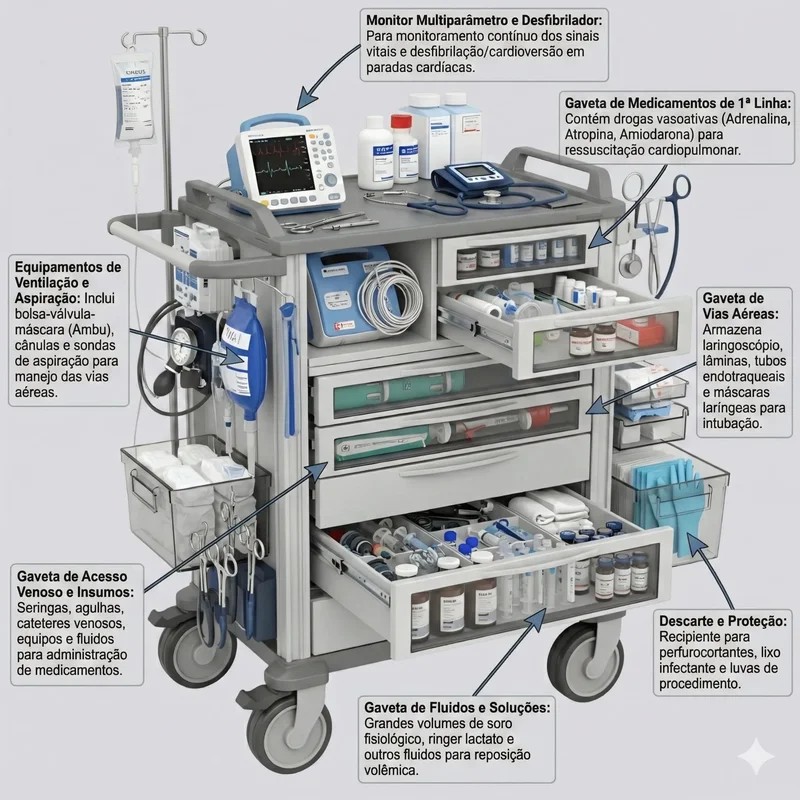
O Carro de Emergência é um armário móvel estruturado estrategicamente com gavetas que contêm tudo o que é necessário para o atendimento imediato a uma parada cardiorrespiratória (PCR) ou intercorrência grave. Suas gavetas são padronizadas dividindo medicamentos, materiais para via aérea (laringoscópio, tubos), materiais para acesso venoso e soros/soluções.
Função da Enfermagem:
- Garantir a conferência de todos os insumos, checando validades e quantitativos conforme o protocolo da instituição.
- Romper o lacre apenas em casos de emergência e assegurar a reposição completa dos materiais imediatamente após o término do evento.
- Manter o carro em local de fácil acesso, desobstruído e sempre pronto para uso no bloco operatório.
7. Carro de Anestesia
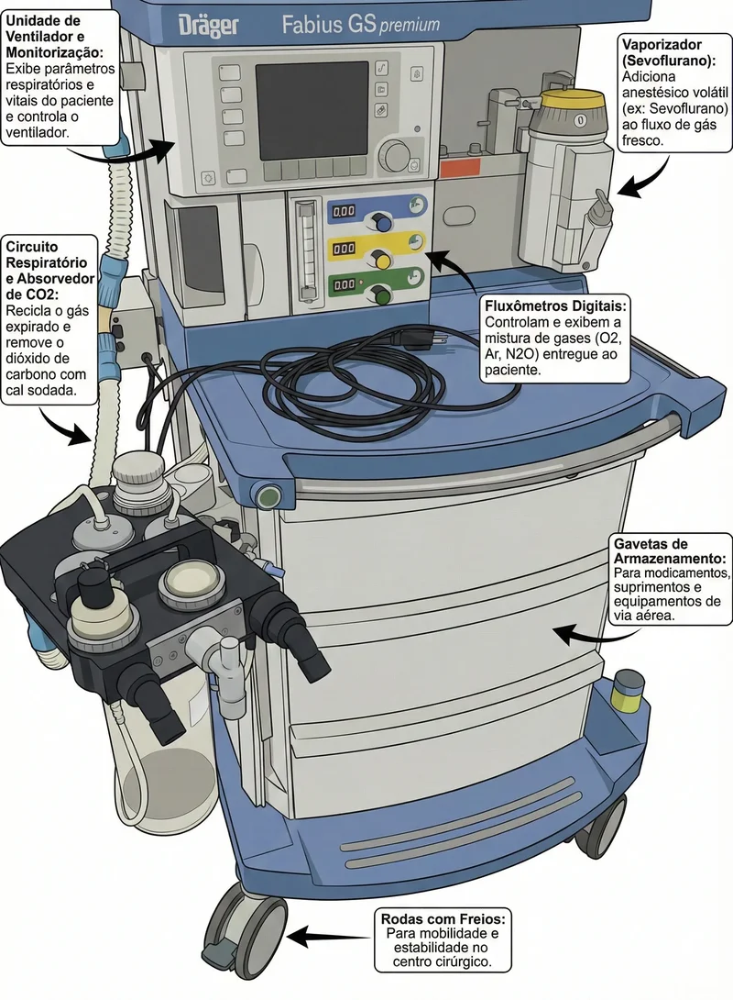
O Carro de Anestesia (ou Estação de Anestesia) é um dos equipamentos mais complexos da sala operatória. Ele permite o fornecimento de oxigênio e a mistura precisa de gases medicinais e anestésicos voláteis (vaporizadores). Além disso, atua como um ventilador mecânico integrado e possui o sistema de absorção de CO2 (cal sodada) para que o paciente respire com segurança sob anestesia geral.
Função da Enfermagem:
- Realizar a conexão correta dos gases na régua da parede e checar o circuito respiratório (traqueias estéreis/descartáveis) antes de cada cirurgia.
- Apoiar o médico anestesiologista durante a indução e reversão anestésica.
- Verificar a saturação e validade da cal sodada (que muda de cor quando exaurida) e realizar a troca seguindo as normas institucionais.
8. Monitor Multiparametros

O Monitor Multiparâmetros capta, processa e exibe graficamente os sinais vitais essenciais do paciente em tempo real. Os parâmetros básicos incluem eletrocardiograma (ECG), frequência cardíaca, oximetria de pulso (SpO2), pressão arterial não invasiva (PANI) e temperatura corporal. Em cirurgias de grande porte, módulos como pressão invasiva (PAI) também são conectados a ele.
Função da Enfermagem:
- Realizar a instalação rápida e segura dos sensores (eletrodos no tórax, oximetria no dedo e manguito no braço) assim que o paciente chega à mesa cirúrgica.
- Prestar atenção aos alarmes que soam durante o procedimento, informando ao anestesista qualquer alteração abrupta.
- Garantir a limpeza e desinfecção dos cabos e sensores a cada troca de paciente.
9. Cama Cirúrgica
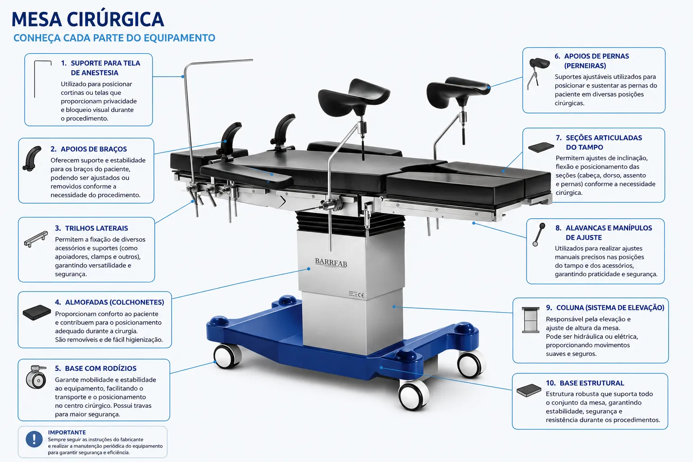
A Cama Cirúrgica (ou Mesa Cirúrgica) é o epicentro do bloco operatório. É um equipamento robusto, articulado e frequentemente motorizado, projetado para suportar o paciente de forma segura e permitir que ele seja posicionado em diversos ângulos e posições complexas (Trendelenburg, litotomia, decúbito ventral, Fowler) necessárias para dar acesso anatômico ao cirurgião.
Função da Enfermagem:
- Manusear os controles da cama sob orientação médica, ajustando a posição anatômica correta de forma gradual.
- Assegurar a proteção do paciente instalando coxins de gel ou espuma nos pontos de proeminência óssea para prevenir lesões por pressão e danos nervosos.
- Afixar os cintos de segurança corretamente e travar a base da mesa para evitar qualquer movimento indesejado.
10. Mesa Mayo
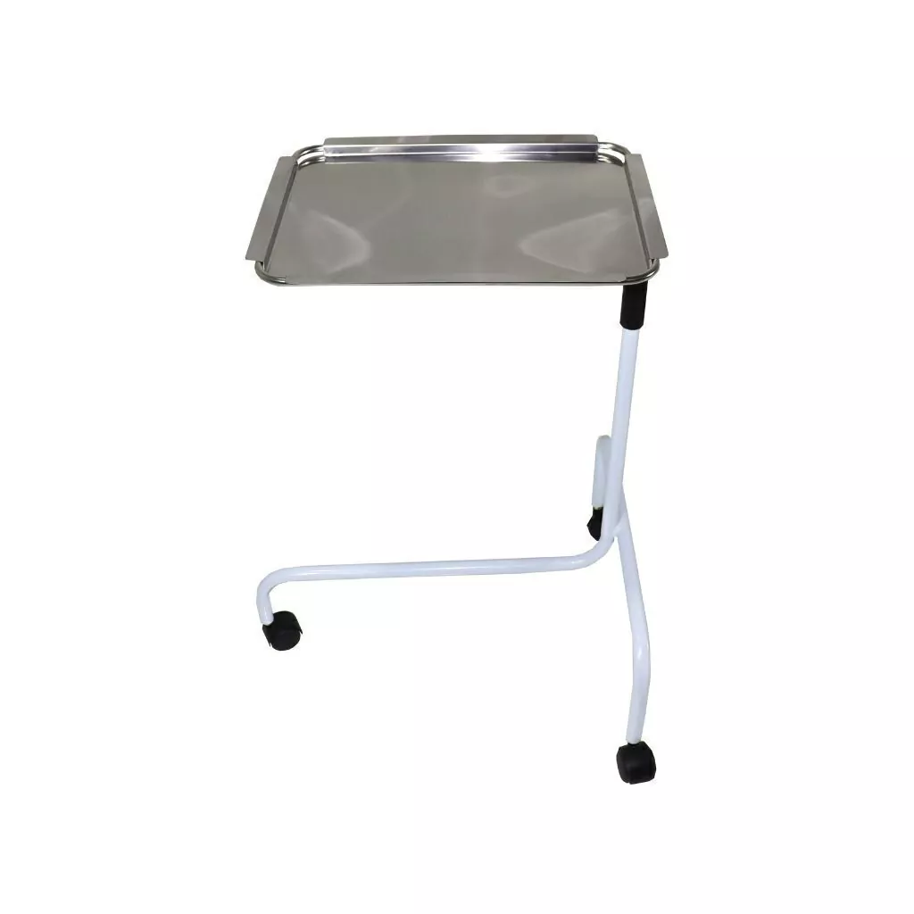
A Mesa Mayo é uma estrutura ajustável em altura com uma bandeja em formato de "L" invertido que é posicionada diretamente por cima (em balanço) sobre os membros inferiores do paciente. Nela, o instrumentador cirúrgico organiza o instrumental de uso imediato e contínuo (bisturis, tesouras, pinças hemostáticas) seguindo os tempos cirúrgicos (diérese, hemostasia, exérese e síntese).
Função da Enfermagem:
- Vestir a mesa com campos ou capas estéreis próprias (geralmente sob a responsabilidade do instrumentador ou enfermeiro).
- O Circulante de Sala não deve tocar nas bordas ou superfície da mesa, fornecendo os materiais estéreis jogando-os delicadamente no campo ou entregando com técnica asséptica.
- Evitar choques e esbarrões mecânicos na mesa para não quebrar a técnica de assepsia do ambiente e não derrubar instrumental.
11. Mesa Auxiliar
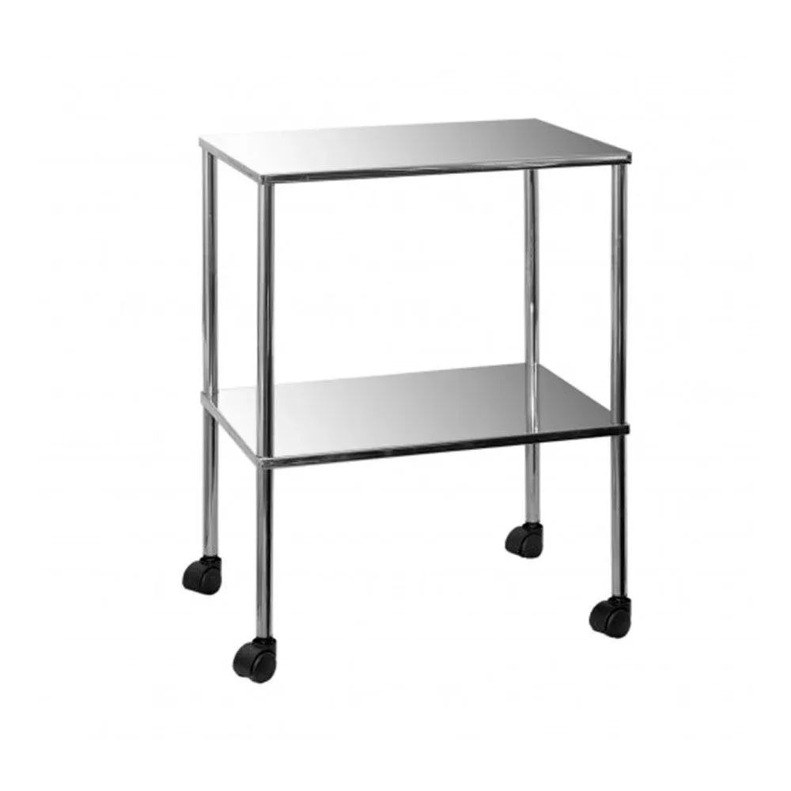
A Mesa Auxiliar (Back Table) é uma mesa retangular e mais ampla, estrategicamente posicionada próxima ao instrumentador, mas afastada da linha direta da cirurgia. Serve para acomodar estoques extras de gazes, compressas, fios de sutura, cubas com soluções, caixas de instrumentais complementares pesadas e equipamentos estéreis que não cabem na mesa Mayo.
Função da Enfermagem:
- O enfermeiro ou técnico circulante auxilia o instrumentador abrindo as embalagens de insumos e caixas estéreis, ofertando-os na mesa auxiliar.
- Colaborar na conferência rigorosa de compressas e perfurocortantes que estão na mesa auxiliar, antes do fechamento da cavidade do paciente.
- Proteger e sinalizar o espaço da mesa auxiliar para que pessoas não paramentadas não contaminem a área.
12. Foco de Cirurgia
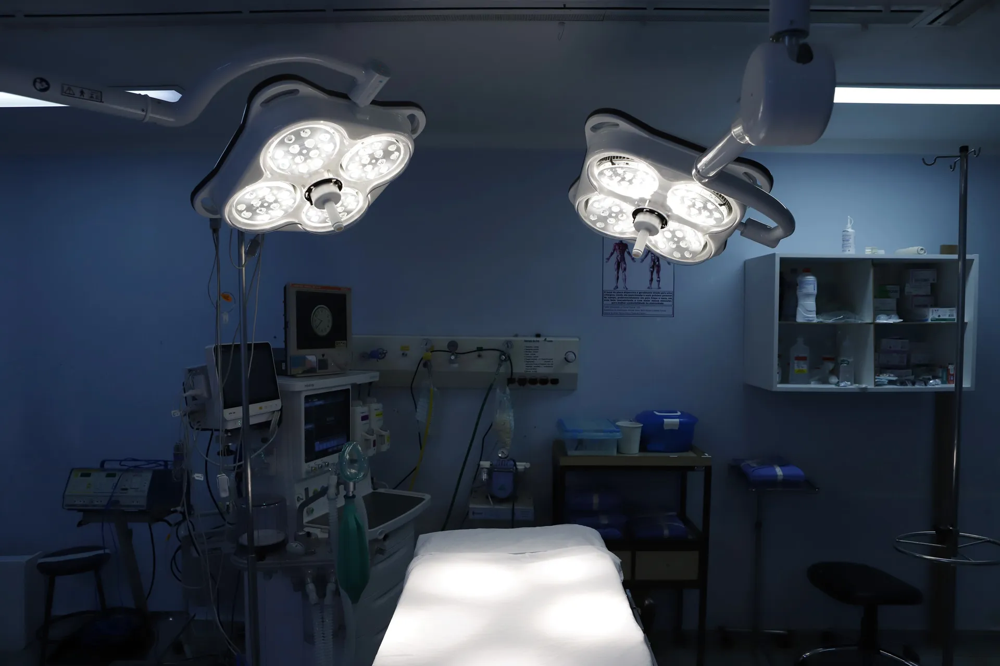
O Foco de Cirurgia é a estrutura de iluminação de alta potência posicionada pendente ao teto da sala. Utiliza tecnologia halógena avançada ou LED para emitir uma luz fria, que não resseca os tecidos do paciente, e possui geometria ótica desenvolvida para eliminar o sombreamento da cabeça e das mãos do cirurgião no campo operatório.
Função da Enfermagem:
- Encaixar manoplas de silicone autoclaváveis (estéreis) no centro do foco, permitindo que o cirurgião paramentado possa movimentar a luz.
- Ligar o equipamento, ajustar os satélites de luz sob demanda externa e regular a intensidade da luz caso o médico solicite.
- Efetuar a limpeza concorrente minuciosa após cada uso (na porção não estéril) para evitar acúmulo de pó sobre a área operatória.
13. Equipamento de Videolaparoscopia
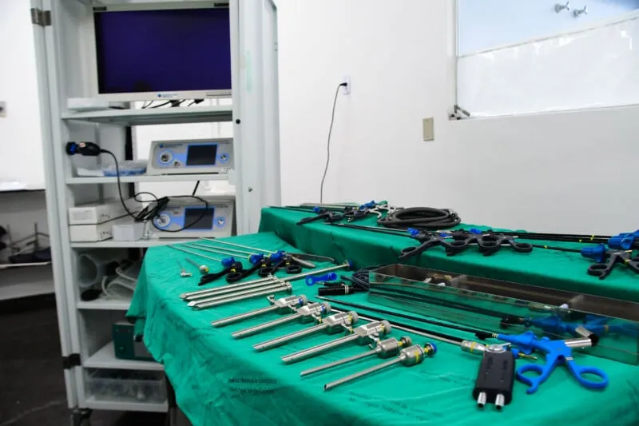
Este equipamento consiste em uma Torre de Videolaparoscopia, um rack complexo que aloja: um monitor cirúrgico de alta definição, um processador de câmera, uma potente fonte de luz fria (LED ou Xenon) e um insuflador de CO2, que gera o pneumoperitônio (inchaço do abdômen) para abrir espaço interno para os instrumentos. É a base da cirurgia minimamente invasiva moderna.
Função da Enfermagem:
- Instalar e conferir as pressões do cilindro externo de Gás Carbônico (CO2) ligado ao insuflador.
- Receber os cabos estéreis (cabo de fibra ótica, mangueira de gás) das mãos do instrumentador e conectá-los com segurança à torre.
- Ter extremo cuidado no manuseio das óticas e cabos, pois são compostos de cristal ou fibras altamente frágeis e caras.
14. Aspirador Cirúrgico
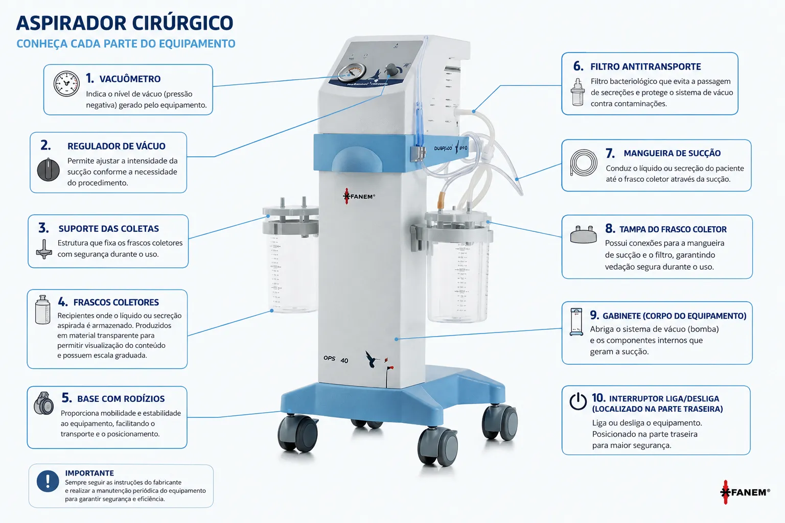
O Aspirador Cirúrgico é um motor gerador de sucção (vácuo) acoplado a frascos coletores graduados. A sua finalidade é remover em tempo real o sangue extravasado, exsudatos, soro de lavagem, fragmentos de tecido e fumaça de bisturi do leito cirúrgico, propiciando ao cirurgião um campo visual limpo para agir.
Função da Enfermagem:
- Ligar as mangueiras estéreis (que vêm do campo cirúrgico) ao frasco conector do aspirador.
- Monitorar o enchimento do frasco coletor, procedendo com a troca imediata caso atinja o limite máximo para não perder a sucção durante momentos críticos.
- Manejar o líquido aspirado com máximo rigor de biossegurança (EPI), descartando os fluidos nos recipientes designados de risco biológico e/ou solidificadores.
15. Cilindro de Óxido Nitroso
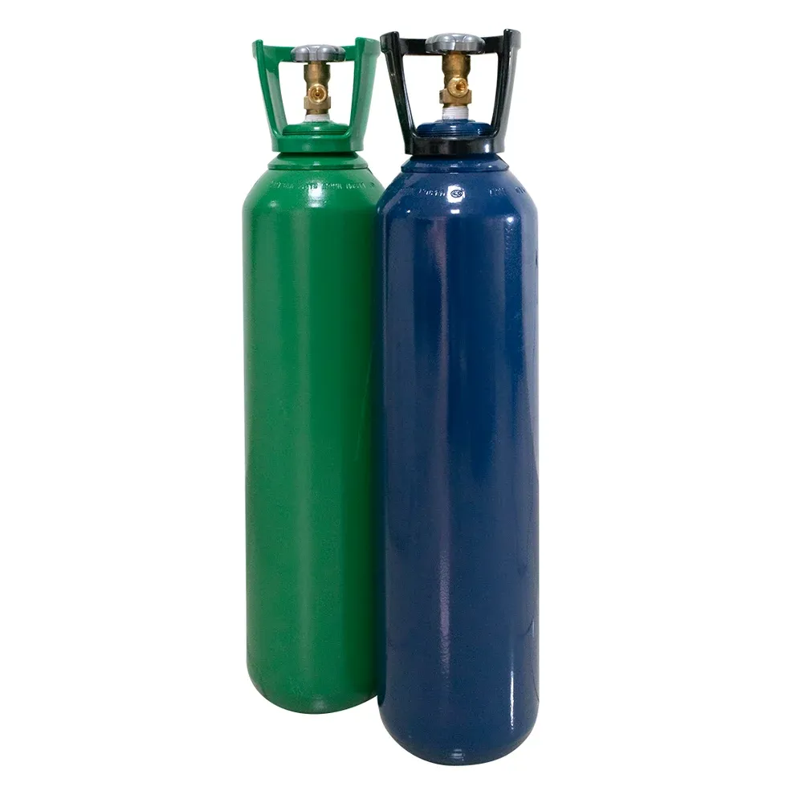
O Cilindro de Óxido Nitroso (N2O) é caracterizado padronizadamente pela cor azul em todo o território nacional. Esse gás (frequentemente conhecido na história como "gás hilariante") é utilizado pelo médico anestesiologista misturado ao oxigênio como um adjuvante analgésico e hipnótico, potencializando os anestésicos inalatórios voláteis.
Função da Enfermagem:
- Atuar no check-list da sala de operação atestando se os cilindros reservas estão cheios através do manômetro.
- Saber identificar os gases pela cor universal de segurança (Verde=O2, Amarelo=Ar Comprimido, Azul=Óxido Nitroso).
- Assegurar o correto armazenamento e a imobilização dos cilindros reservas na sala para evitar tombamento e risco de acidentes.